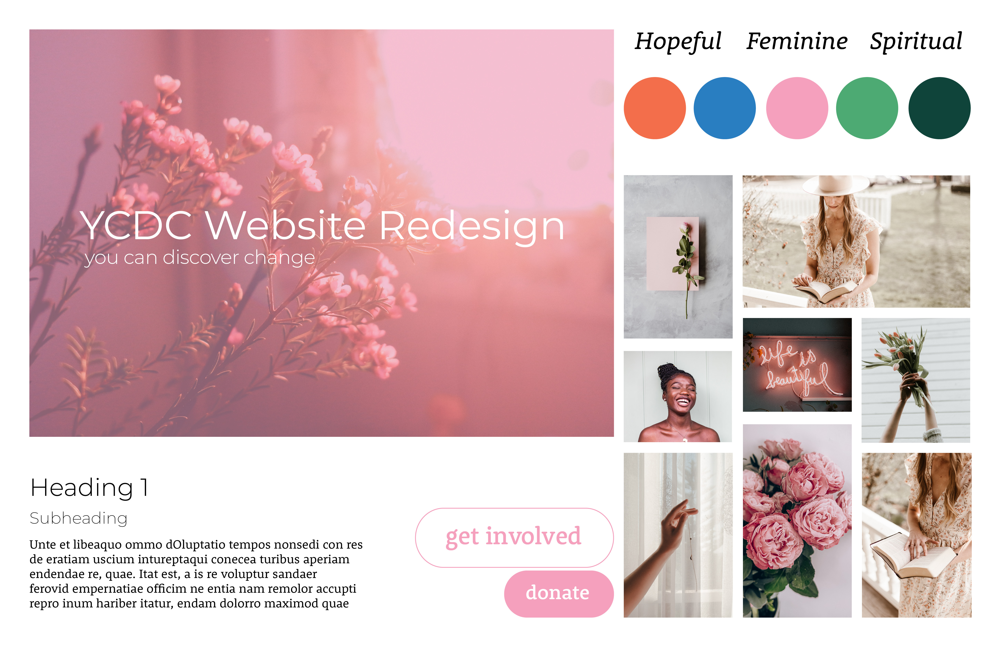

Style Tile
Style Tiles are a helpful tool to assess and brainstorm the potential look and feel of a design. I used the adjectives "feminine, hopeful, and spiritual" to desribe the look and feel that already existed on YCDC's orginal website. I then incorported color, type, texture, and updated logo, and buttons to show the viewer how I wanted the new website to look and feel. Find the style tile as well as the call to action buttons below.
